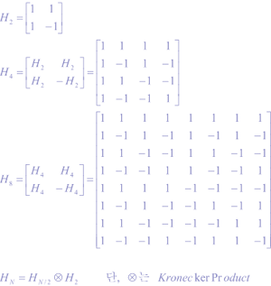
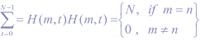
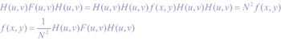
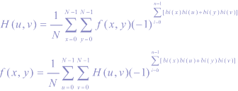
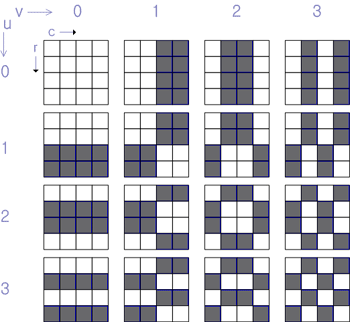
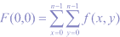

1893년 블란서 수학자 Hadamard에 의해 ±1로된 직교 행렬(orthogonal matrix)이 발표되었고, 1923년에는 미국의 수학자 왈쉬가 왈쉬 함수의 유용성을 발표하였다. 1970년에는 미국 해군 연구소에서 왈쉬 함수의 이용도에 대한 심포지엄을 열어 시스템에 이용할 수 있음을 보였다. 1969년에는 Patt등이 아다마르 변환을 영상(image) 전송에 이용하여 화소가 화면의 중앙과 구석 등에 집중됨을 발표하였다.
Pratt, Kane, Andrews 등이 1969년 IEEE에 [Hadamard Transform Image Coding]을 발표한 이후, Rao, Jain 등에 의해 이산 변환 왈쉬-아다마르(Walsh-Hadamard)에 대해 활발한 연구가 되고 있다.
아다마르(Hadamard) 행렬은 ±1로 구성되며 첫 번째 행과 열이 ±1로만 되는 것이 정규화 아다마르 행렬이라 한다. 기본 2x2행렬은 H2와 같고, 일반식은 HN=HN/2 xH2와 같이 쓸 수 있는 것은 행렬이 순환적이기 때문이다.
아다마르 행렬은 대칭적(symmetric)이고, unitary이 되므로 H=HT=H-1이다. 하드웨어 구성은 송수신단이 동일하고, 영상 신호 처리시 중복도가 있으며 다음 그림에서와 같이 신호 에너지가 아다마르 변환의 기본 평면에서 부분적으로 몰리면서 분포하고 있다. 아다마르 행렬은 다음처럼 인접행과 열의 합이 N또는 0이 될 때의 직교 변환이므로 신호는 Parseval의 정리가 그대로 보존된다.

이차원 아다마르 변환 (u,v)는 다음과 같다.
다시 이 F(u,v)를 역변환하면,

이다. 이 변환을 급수 식으로 나타내면 다음과 같다.

위의 식을 이차 아다마르 변환 쌍(transform pair)이라 한다.

[그림 1] Basis of Hadamard Transform
아다마르 변환의 성질은 첫째로 동세 구역(dynamic range)이 화면 밝기의 평균값에 의해 제한된다.

윗식은 화면 밝기의 평균값을 나타낸다. f(x,y)의 최대 값을 A라 하면 F(0,0)의 최대값은 N2A가 된다. 이것이 동세 구역으로 그 밖의 아다마르 영역의 표본들은 (±N2A)/2을 벗어나지 않는다. 둘째로 공간 영역과 변환 영역에서 신호 에너지가 보존된다.
이 식은 만일 어떤 소수의 아다마르 영역 표본이 큰 값을 가질 때 다른 표본들은 비교적 작은 값을 갖는다는 것이다. 이 작은 크기의 표본치들을 버리면 대역폭(bandwidth)을 줄일 수 있다. 셋째로 f(x,y)가 어떤 정보량(entrophy)을 가질 때 변환 Jacobian이 1이기 때문에 F(u,v)도 같은 정보량을 갖는다. 따라서 변환 부호화를 해도 원래의 영상과 같은 채널로 전송할 수 있다.
아다마르 변환과 가중 아다마르 변환의 영상 부호화에 대해 좀 더 자세한 내용은 참고 문헌을 참고하기 바란다. 또한 Walsh function인 아다마르 matrix는 최근 이동 통신 CDMA에 유용하게 사용되고 있다.